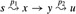
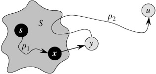
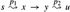

|
|
< Day Day Up > |
|
Dijkstra's algorithm solves the single-source shortest-paths problem on a weighted, directed graph G = (V, E) for the case in which all edge weights are nonnegative. In this section, therefore, we assume that w(u, v) ≥ 0 for each edge (u, v) ∈ E. As we shall see, with a good implementation, the running time of Dijkstra's algorithm is lower than that of the Bellman-Ford algorithm.
Dijkstra's algorithm maintains a set S of vertices whose final shortest-path weights from the source s have already been determined. The algorithm repeatedly selects the vertex u ∈ V - S with the minimum shortest-path estimate, adds u to S, and relaxes all edges leaving u. In the following implementation, we use a min-priority queue Q of vertices, keyed by their d values.
DIJKSTRA(G, w, s) 1 INITIALIZE-SINGLE-SOURCE(G, s) 2 S ← Ø 3 Q ← V[G] 4 while Q ≠ Ø 5 do u ← EXTRACT-MIN(Q) 6 S ← S ∪{u} 7 for each vertex v ∈ Adj[u] 8 do RELAX(u, v, w)
Dijkstra's algorithm relaxes edges as shown in Figure 24.6. Line 1 performs the usual initialization of d and π values, and line 2 initializes the set S to the empty set. The algorithm maintains the invariant that Q = V - S at the start of each iteration of the while loop of lines 4-8. Line 3 initializes the min-priority queue Q to contain all the vertices in V ; since S = Ø at that time, the invariant is true after line 3. Each time through the while loop of lines 4-8, a vertex u is extracted from Q = V - S and added to set S, thereby maintaining the invariant. (The first time through this loop, u = s.) Vertex u, therefore, has the smallest shortest-path estimate of any vertex in V - S. Then, lines 7-8 relax each edge (u, v) leaving u, thus updating the estimate d[v] and the predecessor π[v] if the shortest path to v can be improved by going through u. Observe that vertices are never inserted into Q after line 3 and that each vertex is extracted from Q and added to S exactly once, so that the while loop of lines 4-8 iterates exactly |V| times.
Because Dijkstra's algorithm always chooses the "lightest" or "closest" vertex in V - S to add to set S, we say that it uses a greedy strategy. Greedy strategies are presented in detail in Chapter 16, but you need not have read that chapter to understand Dijkstra's algorithm. Greedy strategies do not always yield optimal results in general, but as the following theorem and its corollary show, Dijkstra's algorithm does indeed compute shortest paths. The key is to show that each time a vertex u is added to set S, we have d[u] = δ(s, u).
Dijkstra's algorithm, run on a weighted, directed graph G = (V, E) with non-negative weight function w and source s, terminates with d[u] = δ(s, u) for all vertices u ∈ V.
Proof We use the following loop invariant:
At the start of each iteration of the while loop of lines 4-8, d[v] = δ(s, v) for each vertex v ∈ S.
It suffices to show for each vertex u ∈ V, we have d[u] = δ(s, u) at the time when u is added to set S. Once we show that d[u] = δ(s, u), we rely on the upper-bound property to show that the equality holds at all times thereafter.
Initialization: Initially, S = Ø, and so the invariant is trivially true.
Maintenance: We wish to show that in each iteration, d[u] = δ(s, u) for the vertex added to set S. For the purpose of contradiction, let u be the first vertex for which d[u] ≠ δ(s, u) when it is added to set S. We shall focus our attention on the situation at the beginning of the iteration of the while loop in which u is added to S and derive the contradiction that d[u] = δ(s, u) at that time by examining a shortest path from s to u. We must have u ≠ s because s is the first vertex added to set S and d[s] = δ(s, s) = 0 at that time. Because u ≠ s, we also have that S ≠ Ø just before u is added to S. There must be some path from s to u, for otherwise d[u] = δ(s, u) = ∞ by the no-path property, which would violate our assumption that d[u] ≠ δ(s, u). Because there is at least one path, there is a shortest path p from s to u. Prior to adding u to S, path p connects a vertex in S, namely s, to a vertex in V - S, namely u. Let us consider the first vertex y along p such that y ∈ V - S, and let x ∈ S be y's predecessor. Thus, as shown in Figure 24.7, path p can be decomposed as . (Either of paths p1 or p2 may have no edges.)

Figure 24.7: The proof of Theorem 24.6. Set S is nonempty just before vertex u is added to it. A shortest path p from source s to vertex u can be decomposed into s , where y is the first vertex on the path that is not in S and x ∈ S immediately precedes y. Vertices x and y are distinct, but we may have s = x or y = u. Path p2 may or may not reenter set S.
We claim that d[y] = δ(s, y) when u is added to S. To prove this claim, observe that x ∈ S. Then, because u is chosen as the first vertex for which d[u] ≠ δ(s, u) when it is added to S, we had d[x] = δ(s, x) when x was added to S. Edge (x, y) was relaxed at that time, so the claim follows from the convergence property.
We can now obtain a contradiction to prove that d[u] = δ(s, u). Because y occurs before u on a shortest path from s to u and all edge weights are nonnegative (notably those on path p2), we have δ(s, y) ≤ δ(s, u), and thus
But because both vertices u and y were in V - S when u was chosen in line 5, we have d[u] ≤ d[y]. Thus, the two inequalities in (24.2) are in fact equalities, giving
d[y] = δ(s, y) = δ(s, u) = d[u].
Consequently, d[u] = δ(s, u), which contradicts our choice of u. We conclude that d[u] = δ(s, u) when u is added to S, and that this equality is maintained at all times thereafter.
Termination: At termination, Q = Ø which, along with our earlier invariant that Q = V - S, implies that S = V. Thus, d[u] = δ(s, u) for all vertices u ∈ V.
If we run Dijkstra's algorithm on a weighted, directed graph G = (V, E) with nonnegative weight function w and source s, then at termination, the predecessor subgraph Gπ is a shortest-paths tree rooted at s.
Proof Immediate from Theorem 24.6 and the predecessor-subgraph property.
How fast is Dijkstra's algorithm? It maintains the min-priority queue Q by calling three priority-queue operations: INSERT (implicit in line 3), EXTRACT-MIN (line 5), and DECREASE-KEY (implicit in RELAX, which is called in line 8). INSERT is invoked once per vertex, as is EXTRACT-MIN. Because each vertex v ∈ V is added to set S exactly once, each edge in the adjacency list Adj[v] is examined in the for loop of lines 7-8 exactly once during the course of the algorithm. Since the total number of edges in all the adjacency lists is |E|, there are a total of |E| iterations of this for loop, and thus a total of at most |E| DECREASE-KEY operations. (Observe once again that we are using aggregate analysis.)
The running time of Dijkstra's algorithm depends on how the min-priority queue is implemented. Consider first the case in which we maintain the min-priority queue by taking advantage of the vertices being numbered 1 to |V|. We simply store d[v] in the vth entry of an array. Each INSERT and DECREASE-KEY operation takes O(1) time, and each EXTRACT-MIN operation takes O(V) time (since we have to search through the entire array), for a total time of O(V2+E) = O(V2).
If the graph is sufficiently sparse-in particular, E = o(V2/ lg V)-it is practical to implement the min-priority queue with a binary min-heap. (As discussed in Section 6.5, an important implementation detail is that vertices and corresponding heap elements must maintain handles to each other.) Each EXTRACT-MIN operation then takes time O(lg V). As before, there are |V| such operations. The time to build the binary min-heap is O(V). Each DECREASE-KEY operation takes time O(lg V), and there are still at most |E| such operations. The total running time is therefore O((V + E) lg V), which is O(E lg V) if all vertices are reachable from the source. This running time is an improvement over the straightforward O(V2)-time implementation if E = o(V2/ lg V).
We can in fact achieve a running time of O(V lg V + E) by implementing the min-priority queue with a Fibonacci heap (see Chapter 20). The amortized cost of each of the |V| EXTRACT-MIN operations is O(lg V), and each DECREASE-KEY call, of which there are at most |E|, takes only O(1) amortized time. Historically, the development of Fibonacci heaps was motivated by the observation that in Dijkstra's algorithm there are typically many more DECREASE-KEY calls than EXTRACT-MIN calls, so any method of reducing the amortized time of each DECREASE-KEY operation to o(lg V) without increasing the amortized time of EXTRACT-MIN would yield an asymptotically faster implementation than with binary heaps.
Dijkstra's algorithm bears some similarity to both breadth-first search (see Section 22.2) and Prim's algorithm for computing minimum spanning trees (see Section 23.2). It is like breadth-first search in that set S corresponds to the set of black vertices in a breadth-first search; just as vertices in S have their final shortest-path weights, so do black vertices in a breadth-first search have their correct breadth-first distances. Dijkstra's algorithm is like Prim's algorithm in that both algorithms use a min-priority queue to find the "lightest" vertex outside a given set (the set S in Dijkstra's algorithm and the tree being grown in Prim's algorithm), add this vertex into the set, and adjust the weights of the remaining vertices outside the set accordingly.
Run Dijkstra's algorithm on the directed graph of Figure 24.2, first using vertex s as the source and then using vertex z as the source. In the style of Figure 24.6, show the d and π values and the vertices in set S after each iteration of the while loop.
Give a simple example of a directed graph with negative-weight edges for which Dijkstra's algorithm produces incorrect answers. Why doesn't the proof of Theorem 24.6 go through when negative-weight edges are allowed?
Suppose we change line 4 of Dijkstra's algorithm to the following.
4 while |Q| > 1
This change causes the while loop to execute |V | - 1 times instead of |V | times. Is this proposed algorithm correct?
We are given a directed graph G = (V, E) on which each edge (u, v) ∈ E has an associated value r(u, v), which is a real number in the range 0 ≤ r(u, v) ≤ 1 that represents the reliability of a communication channel from vertex u to vertex v. We interpret r(u, v) as the probability that the channel from u to v will not fail, and we assume that these probabilities are independent. Give an efficient algorithm to find the most reliable path between two given vertices.
Let G = (V, E) be a weighted, directed graph with weight function w : E → {1, 2, ..., W } for some positive integer W , and assume that no two vertices have the same shortest-path weights from source vertex s. Now suppose that we define an unweighted, directed graph G' = (V ∪ V', E') by replacing each edge (u, v) ∈ E with w(u, v) unit-weight edges in series. How many vertices does G' have? Now suppose that we run a breadth-first search on G'. Show that the order in which vertices in V are colored black in the breadth-first search of G' is the same as the order in which the vertices of V are extracted from the priority queue in line 5 of DIJKSTRA when run on G.
Let G = (V, E) be a weighted, directed graph with weight function w : E → {0, 1, ..., W } for some nonnegative integer W . Modify Dijkstra's algorithm to compute the shortest paths from a given source vertex s in O(W V + E) time.
Modify your algorithm from Exercise 24.3-6 to run in O((V + E) lg W ) time. (Hint: How many distinct shortest-path estimates can there be in V - S at any point in time?)
Suppose that we are given a weighted, directed graph G = (V, E) in which edges that leave the source vertex s may have negative weights, all other edge weights are nonnegative, and there are no negative-weight cycles. Argue that Dijkstra's algorithm correctly finds shortest paths from s in this graph.
|
|
< Day Day Up > |
|